<!DOCTYPE html>
<html>

  <head>
    <title>Emily Porat | L&D Portal</title>
    <link rel="stylesheet" type="text/css" href="styles/global.css">
    <link rel="stylesheet" type="text/css" href="styles/global-mobile.css">
    <link rel="stylesheet" type="text/css" href="styles/nav.css">
    <link rel="stylesheet" type="text/css" href="styles/l&d.css">
    <script src="https://ajax.googleapis.com/ajax/libs/jquery/1.9.1/jquery.min.js"></script>
    <link rel="shortcut icon" type="image/x-icon" href="pics/favicon.ico" />
    <link rel="stylesheet" href="https://cdnjs.cloudflare.com/ajax/libs/font-awesome/4.7.0/css/font-awesome.min.css">
    <!-- Global site tag (gtag.js) - Google Analytics -->
    <script async src="https://www.googletagmanager.com/gtag/js?id=UA-119412150-1"></script>
    <script>
      window.dataLayer = window.dataLayer || [];
      function gtag(){dataLayer.push(arguments);}
      gtag('js', new Date());

      gtag('config', 'UA-119412150-1');

      // load other reused files
      $(function() {
      	$('#nav').load('http://emilyporat.com/nav.html');
      	$('#footer').load('http://emilyporat.com/footer.html');
      });
    </script>
  </head>

  </html>
  <body class="preload">
    <meta name="viewport" content="width=device-width">
    <div id="nav"></div>
	<div id="arrow-up" onclick="slideUp()"><i class="fa fa-angle-up"></i></div>
	
	  	<div class="title-wrapper">
            <div class="title">
                <div class="header">L&D Portal</div>
                <div class="last"> <div class="short-divider"></div></div>
                <div class="subheader-2 center">Summer 2018 • Deloitte Digital Summer Internship</div>
            </div>
	  	</div>
      
	  	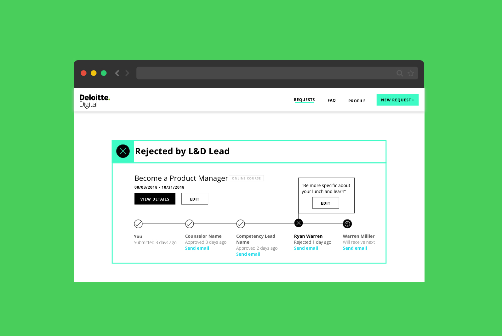
        <div id="pic-space"></div>

	  	<div class="panel">
			<div class="context-summary">
			<div class="subheader-2">Context</div>
				During my summer at <a href="https://www.deloittedigital.com/">Deloitte Digital</a> as a UX Design Intern, I redesigned the Learning and Development Portal: a website through which Deloitte Digital practitioners can request to attend external continuing education (CED) opportunities such as conferences and trainings.
				<p>
				I had full ownership over this project: I created my own project plan and timeline, I decided what methods and tools I wanted to use and learn, and I headed all the group efforts that went into the project.
				</p>
				<p>
				Through my work, I made requesting education opportunities easier and more transparent for practitioners and better informed leadership on budget decisions.
				</p>
				<p>
				View all the requester screens <a href="pics/l&d/requester.pdf">here</a> and all the approver screens <a href="pics/l&d/approver.pdf">here</a>! 
				</p>

			</div>
			
			<div class="context-specifics">
				<div class="subheader-2">Team</div>
					<div class="context-description">
					The Learning team is made up of three others: a product manager, project manager, and senior manager.</div>
				<div class="subheader-2">Skills</div> 
					<div class="context-description">Heuristic Evaluation, Interviewing, Usability Testing, Affinity Mapping, Product Visioning, Personas, User Stories, Business Process Modeling, Information Architecture, Wireframing, Prototyping, Presenting</div>
				<div class="subheader-2">Tools</div> 
					<div class="context-description">Adobe InDesign, Sketch, InVision, PowerPoint, A lot of sticky notes</div>
			</div>
	  	</div>


	  	<div class="panel gray">
	  	<div class="subheader-3 left">Process</div>
	  	<div class="body right">
	  		I followed the classic double-diamond process for this 6-week project, splitting each phase into roughly a two-week sprint. 
	  		<p>In the 'Discover' phase, I did a Heuristic Evaluation of the existing portal and conducted 20 interviews and 2 usability tests with users and stakeholders.</p> 
	  		<p>In 'Define,' I worked with a team to create an Affinity Map from nearly 400 statements gathered from research. We also completed a product visioning session, and I created personas and prioritized user stories. </p>
	  		<p>I kicked off 'Develop' with a Crazy 8s session, and eventually worked through several iterations of wireframes and prototypes. </p>
	  		<p>In 'Deploy,' I interviewed the developer who will be taking this project forward, created a style guide, and began to work through visual designs for screens.</p>
	  	</div>
	  	</div>

	  	<div class="panel">
		<div class="subheader-3 left">Heuristic Evaluation</div>
		 	<div class="body right">
		  	My first step in understanding the existing portal (and ripping it to shreds) was to evaluate it based on <a href="https://www.nngroup.com/articles/ten-usability-heuristics/">Nielsen's ten heuristics for usability</a>. Going through this process helped me pick apart major issues with the site and allowed me to familiarize myself with its features so I was better prepared going into interviews. 
		  	<p>I started by printing out all the pages I want to evaluate and circling features or functionality that seemed flawed. I then went back through and categorized each flaw. View the full report <a href="pics/l&d/heuristiceval.pdf">here</a>.</p>
		  	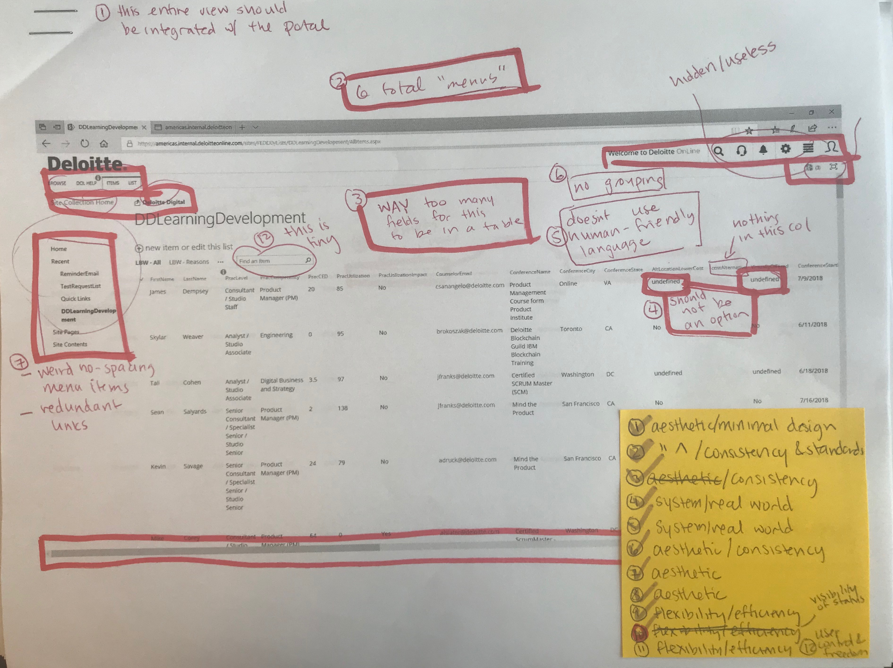
		  	</div>
		</div>

		<div class="panel gray">
		<div class="subheader-3 left">Interviews</div>
		<div class="body right">
			Before speaking to anyone, I determined who I needed to talk to in order to cover all potential user and stakeholder groups and created a <a href="pics/l&d/interview-script.pdf">script</a>. I divided the specific questions into general categories - Continuing Education, Approval Process, and Existing Portal. I knew it was important not to constrain myself by rigorously following a list of questions during interviews, so I used them as a starting off point and allowed the interviews to feel more like conversations. 
			<p>Throughout one week, I interviewed 20 individuals: 9 requesters, 5 approvers, 3 administrators, 2 developers, and 1 talent representative.
			</p>
			<p>These were some insightful quotes from interviews:
				<li>"I want to become a better developer through different trainings and conferences and bring back new ideas, methodologies, and concepts to the studio."</li>
				<li>"When I look to do training, there are enough barriers that prevent me from really working hard to try. It doesn't come up in regular conversation or emails, and I don't know how to apply - it seems like a lot of money and I'm not sure how to bring it up to my counselor."</li>
				<li>"There really aren't any defined bounds - a certain amount of money is set aside for each person, but we will still approve a lot of requests above that amount since a lot of people don't take advantage of their allocated money"</li>
			</p>
		</div>
		</div>

		<div class="panel">
		<div class="subheader-3 left">Initial Usability Testing</div>
		<div class="body right">
			I didn't want to spend too much time testing the existing system because I anticipated completely starting from scratch, so I only did usability testing with two people. I also created a <a href="pics/l&d/usability-script.pdf">script</a> in preparation, and what I observed helped me gain a better understanding of some of the pain points. Below are screens from the original site that users were navigating.
  			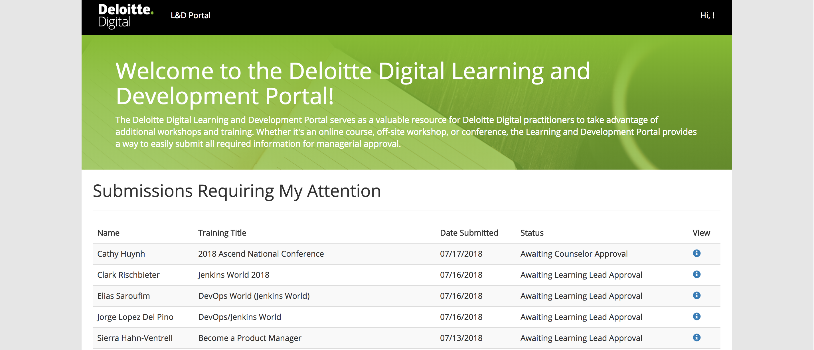
  			This first picture is the landing page, which has several separate tables below the visible one and lots of redundant information.
			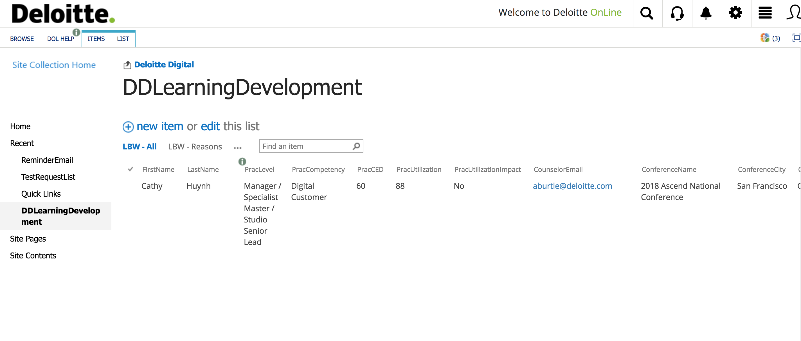
			The second screen is the "Admin Dashboard," essentially a table of all the metadata collected through the portal through the request process. 
		</div>
		</div>

		<div class="panel gray">
		<div class="subheader-3 left">Affinity Mapping</div>
		<div class="body right">
			In order to identify underlying needs and perspectives among the diverse group of interviewees, I led a team of UX designers and Product Managers in extracting salient points from the interviews into almost 400 individual user notes. Each individual note constitutes a single belief, experience, opinion, concern or need.
			<p>
			In total, we identified six top-level categories that highlight user needs and perspectives in a way that informs product development:
			<li><b>Balancing</b> the amount of transparency surrounding the site, approval process, and budget</li>
			<li><b>Learning</b> on an individual basis and for Deloitte Digital as a whole</li>
			<li><b>Supporting</b> practitioners as they go through the request process</li>
			<li>A <b>tailored</b> experience for each request</li>
			<li><b>Analytics</b> provide insight into the budget</li>
			<li><b>Accessibility</b> is vital for a growing user base</li>
			</p>
			<p>
			Read on for an overview of the process that allowed us to pull those insights from the research or <a href="pics/l&d/affinity.pdf">download the full report here.</a>
			</p>
			After organizing and printing out 381 slips of paper with insights and interview quotes, we sorted them into "Level 3" groupings - the most specific supporting details. Initially, we used a word or phrase to describe each grouping, but by the end of this session, we had converted each phrase into an I-statement.
			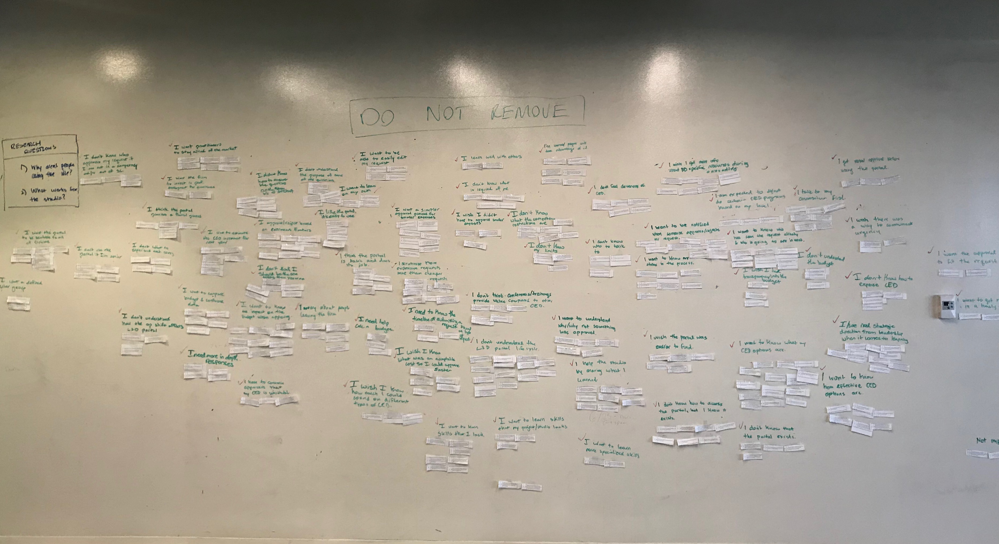

			Next, we organized the groupings into higher level I-statements (Level 2). Finally, we organized the Level 2 statements into Level 1 categories - one word that encompasses everything beneath it.
			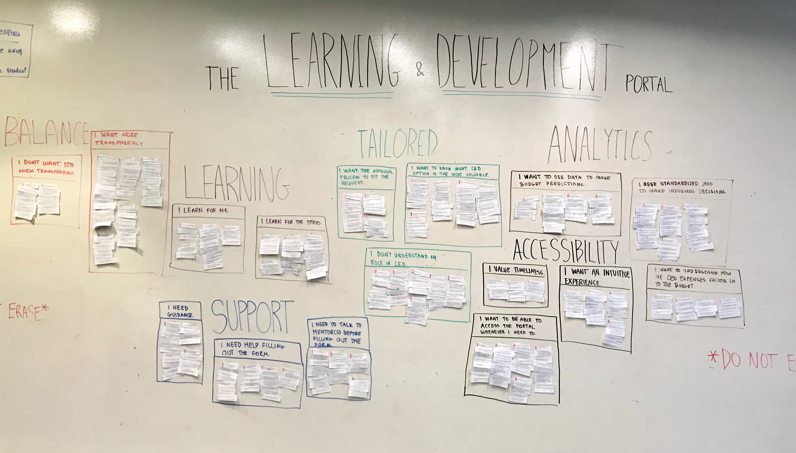

			Once we finalized the groupings, we invited everyone in Deloitte Digital to "Walk the Wall," an exercise through which stakeholders review the finished diagram and leave notes that fall under three categories - key insights, questions, and design ideas.
			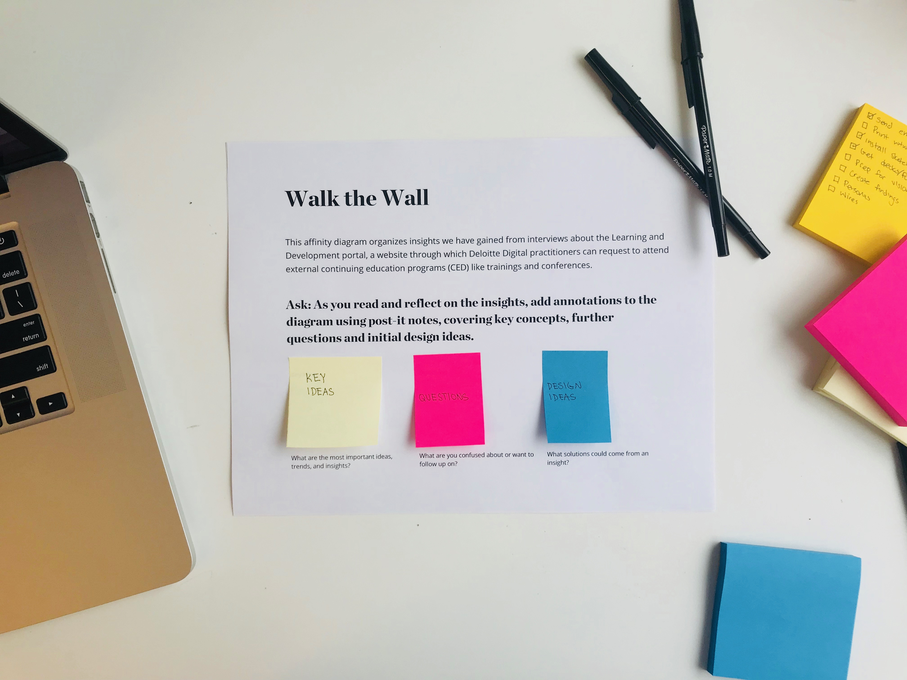
			After annotations had been added, the final picture that emerges is an interplay of sorted data with reactions and analysis of that data.
		</div> 
		</div>

		<div class="panel">
		<div class="subheader-3 left">Personas</div>
		<div class="body right">
			From the numerous interview subjects, four categories stuck out: Requesters, Approvers, Administrators, and Leadership. Each has a distinct role and goals:
			<div class="panel last"> <div class="divider"></div> </div>
			<b>Alex | Requester | UX Designer at Deloitte Digital | <a href="pics/l&d/Alex.pdf">Full Profile</a></b>
			<p>"I want to make the most of my continuing education opportunities, but I don't know how to start"</p>
			<p>Goal: Alex wants to sharpen her skills through continuing education opportunities to remain competitive in the market and contribute meaningfully to her project at work.</p>

			<div class="panel last"> <div class="divider"></div> </div>
			<b>Kevin | Approver | Engineering Manager at Deloitte Digital | <a href="pics/l&d/Kevin.pdf">Full Profile</a></b>
			<p>"I usually know what's best for my counselees, but sometimes I need help making that call"</p>
			<p>Goal: Kevin wants to have confidence in his request decisions and serve the needs of his counselees.</p>

			<div class="panel last"> <div class="divider"></div> </div>
			<b>Andrew | Administrator | Learning & Development Lead at Deloitte Digital | <a href="pics/l&d/Drew.pdf">Full Profile</a></b>
			<p>"I care about what's best for the studio, but I struggle to do that without analytics tools"</p>
			<p>Goal: Drew wants to keep the studio on track in terms of both budget and learning.</p>

			<div class="panel last"> <div class="divider"></div> </div>
			<b>Karen | Leadership | Service Line Lead at Deloitte Digital | <a href="pics/l&d/Karen.pdf">Full Profile</a></b>
			<p>"I want every practitioner to have an equal opportunity to learn and grow"</p>
			<p>Goal: Karen wants practitioners to strengthen their skills through continuing education opportunities so that the studio maintains its eminence.</p>

		</div>
		</div>

		<div class="panel gray">
		<div class="subheader-3 left">Product Visioning Session</div>
		<div class="body right">
			
			Having synthesized most of the qualitative data, the next step was to create a broad vision for the portal in order to brainstorm and prioritize specific features - this was my way of bridging the gap between research and design.

			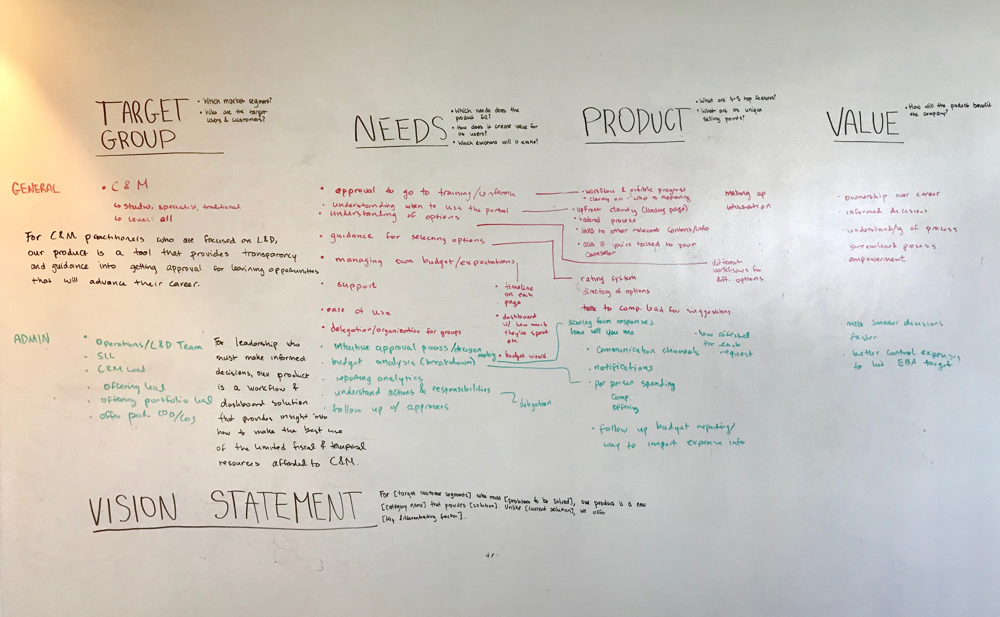
	
			<p>
			The goal of the session was to brainstorm and prioritize requirements for delivering on the product vision, and to establish a cohesive vision that aligns with user needs and business goals.
			</p>

			<p>
			I led the session, and several stakeholders, including all of the administrators and the head of the Deloitte Digital studio, were in attendance. I followed the <a href="http://www.romanpichler.com/tools/vision-board"> Product Vision Board</a> framework. View the completed board <a href="pics/l&d/product-visioning.pdf">here.</a>
			</p>

			<p>These were the ultimate vision statements we came up with:</p>
				<li>For Customer & Marketing practitioners who are focused on learning and development, our product is a tool that provides transparency and guidance into getting approval for the learning opportunities they desire to advance their careers.
				</li>
				<li>For leadership who must make informed decisions, our product is a workflow and dashboard solution that provides insight into how to make the best use of the limited fiscal and temporal resources afforded to Customer & Marketing.
				</li>
			</p>

		</div>
		</div>

		<div class="panel">
		<div class="subheader-3 left">User Stories</div>
		<div class="body right">
		  
			The next logical step was to create prioritized user stories for each user group. View the full document <a href="">here.</a>  
		  	
		  	<p>Creating these user stories helped me flesh out the specific features that we identified through product visioning, identify which features belonged on which page, and draw the line between MVP features and nice-to-haves.</p>
		  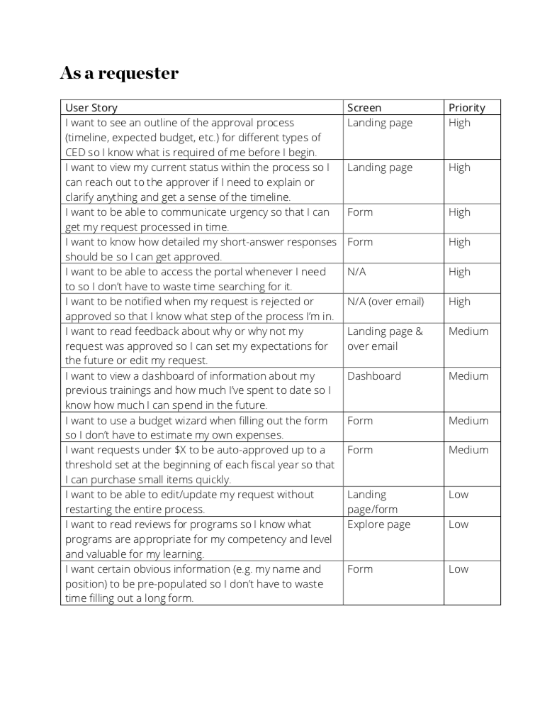
		</div>
		</div>

		<div class="panel gray">
		<div class="subheader-3 left">Business Process Modeling</div>
		<div class="body right">
			The current approval process is a one-size-fits all process that is in no way tailored to the request or user. So, an essential piece of this portal redesign was also redesigning the underlying process behind the portal. I started by breaking up the process into two user groups, by practitioner level: Analysts - Senior Consultants, and Managers and above. At the Manager level, it is likely that your counselor is an administrator, which creates redundancies. 
			<p>The second big divide that needed to be addressed was cost - inexpensive requests like a $10 online course should not have to go through several levels of approval, rather, they can be auto-approved if the practitioner is below a certain threshold. I took these issues, as well as several other factors, when creating the flows below.</p>
		</div>
		</div>

		<div class="panel dark">
			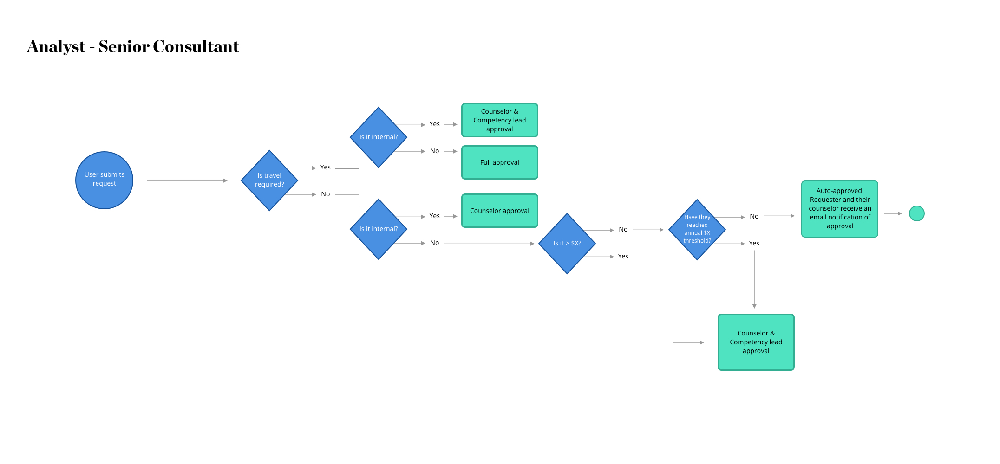
			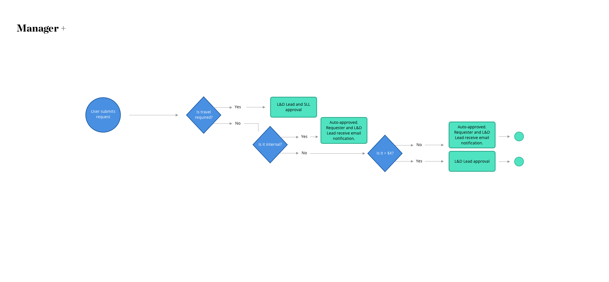
		</div>

		<div class="panel">
		<div class="subheader-3 left">Wireframes</div>
		<div class="body right">
			
			There are three separate levels of unique screens. Shown is my initial brainstorm for the requester landing page.
			<p>Requester:</p>
				<li>Landing page - Requests (their own)</li>
				<li>FAQ</li>
				<li>Request Form</li>
			
			<p>Approver:</p>
				<li>Landing page - Requests (with requests they have to approve)</li>
				<li>Request details</li>
			
			<p>Administrator:</p>
				<li>Dashboard</li>
			<p>I began each screen design with a Crazy 8s brainstorm, then I moved to a few full screen sketches that incorporated the best ideas, and finally to mid-fi digital screens in Sketch. Once I finished my first iteration of screens, I had several senior designers review my work. Below are some of the finalized requester screens.</p>
			<p>
			After building wireframes, I moved the screens into InVision to create an interactive, semi-functional prototype. I then conducted 2 usability tests, following the same script as my initial tests, to compare how the new screens stacked up.
			</p>
		</div>
		</div>

		  	<div class="panel dark" style="text-align: center">
		  		<div class="triple-pics">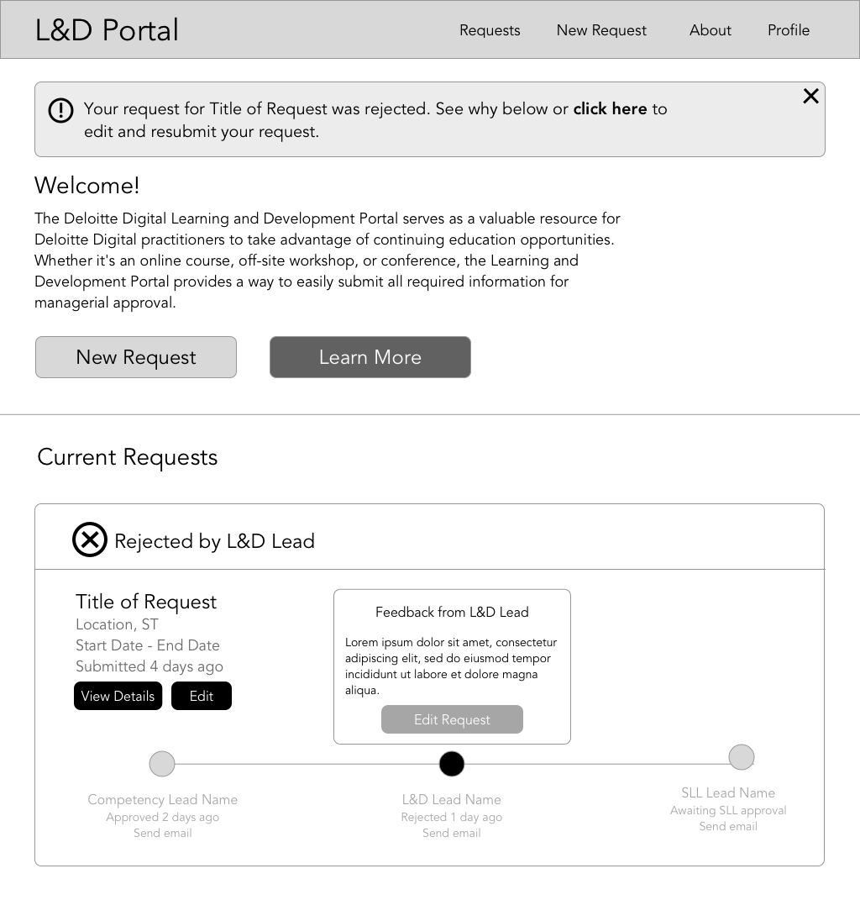</div>
		  		<div class="triple-pics">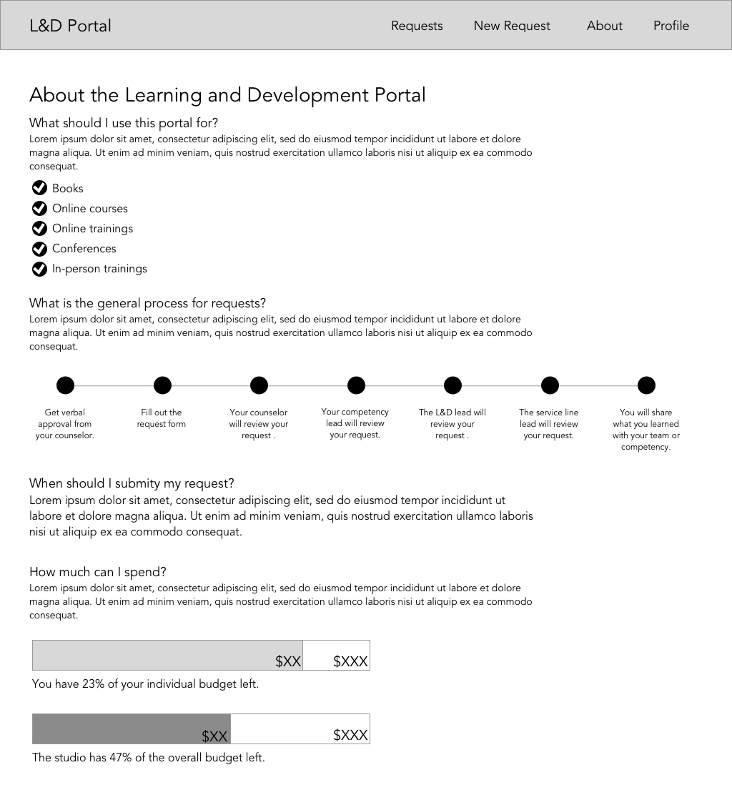</div>
		  		<div class="triple-pics">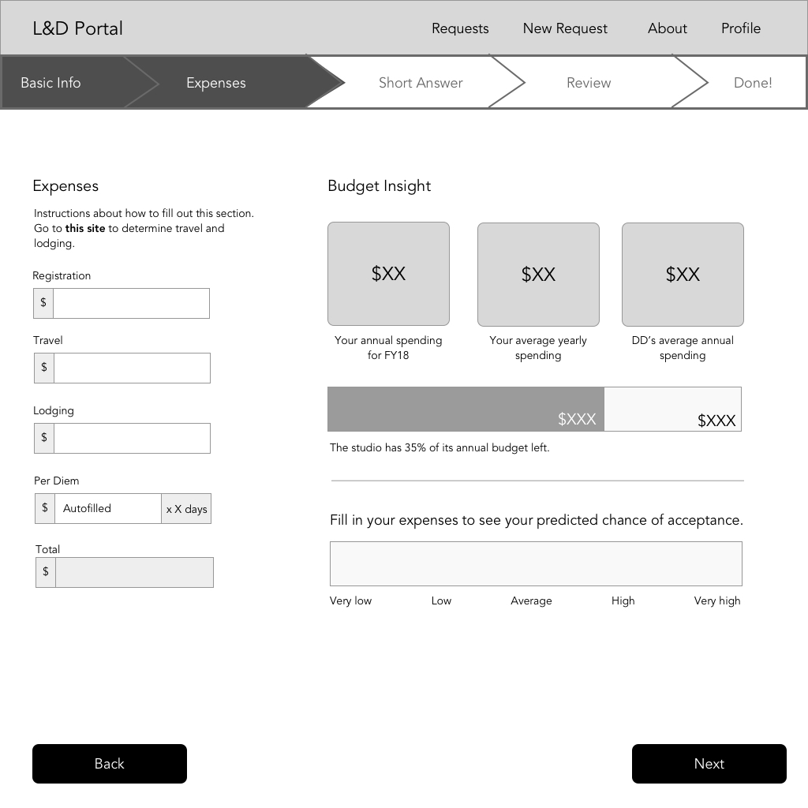</div>
		  	</div>

		<div class="panel">
		<div class="subheader-3 left">Visual Design</div>
			
			<div class="body right">
			After incorporating feedback from usability testing, I moved on to visual design. I used Deloitte Digital branding, so I created a simplified style guide based on the lengthy existing style guide. 
			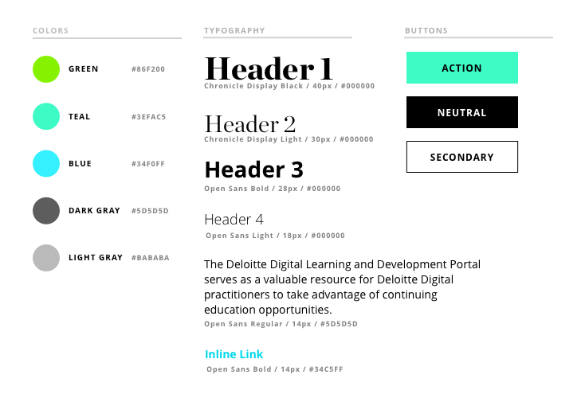
			<p>
			I only had a few days to work on the style guide and visual design, so I only completed the requester screens, but I worked through several iterations and had a senior designer review my work. View all the requester screens <a href="pics/l&d/requester.pdf">here</a> and all the approver screens <a href="pics/l&d/approver.pdf">here</a>! 
			</p>
		</div>
		</div>

        <div style="background-color: white; position: relative; display: flow-root">
		  	<a href="chutzpow.html" class="next-project" style="background-color: #49ce5c; float: right"> 
		  		CHUTZ-POW
                <i class="fa fa-chevron-right" style="padding-left: 10px"></i>
		  	</a>

		  	<a href="justharvest.html" class="next-project" style="background-color: #49ce5c; float: left"> 
		  		<i class="fa fa-chevron-left" style="padding-right: 10px"></i>
                COMMUNITY TABLE
		  	</a>
        </div>

  	<div id="footer"></div>
  	</meta>
  </body>

  <script src="js/general.js"></script>

</html>